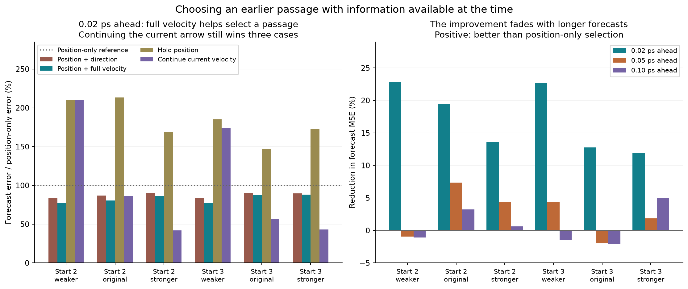

Yes, for the short forecast tested here. Selecting an older passage using position and full velocity reduces the 0.02 ps forecast error by 11.9–22.8% relative to selecting by position alone, in all six comparisons on starts 2 and 3. It also improves on position plus direction by 1.9–7.8% in those six comparisons.
It does not win every test. Simply continuing the current velocity arrow beats the selected-passage forecast in three of those six short-horizon comparisons. At 0.10 ps, full-velocity selection improves on position-only selection in three cases and worsens it in three. Holding position beats the full-velocity forecast in both weaker runs at that longer horizon.

The previous test followed the spatially nearest old passage. This one lets each rule choose among nearby older passages, then freezes its choice. All candidates lie within distance 0.02 of the current point and between 0.10 and 1.00 ps in the past. Each older recorded segment contributes its closest projected point.
To turn the chosen passage into a forecast, translate its starting point onto the current point, then reuse its subsequent displacement. The forecast uses an older continuation that is already fully recorded at the current time. No future data are needed to make it. Two simple baselines hold the current position or continue the current velocity in a straight line.
A necessary change: velocity now comes from the current and previous frames only. The centered arrows in the earlier descriptive viewer used one frame ahead as well; that is suitable for inspecting recorded motion, but would give a predictive rule information from the future. A test that deliberately changes all future positions confirms that the new selections and forecasts remain unchanged.
The rule definitions, weight grids, target horizon and split were saved before this analysis ran. Start 1 across all three damping levels chose one shared weight for each selector. Those weights were then frozen for the other starts and all horizons. Starts 2 and 3 have appeared in earlier exploratory work: this is a separate-start check of the new rule, not untouched confirmation.
Each run supplies 990 possible anchors from 10.00 to 19.89 ps. An anchor is eligible only if at least one nearby older passage exists. Every method and baseline uses that same eligible set within a run. This prevents one method from improving its error merely by refusing harder cases.
Lower is better. Error sums squared x and y errors, then averages across eligible anchors; units are squared mean-direction coordinates. It measures this collective projection, not molecular positions in space.
| Start | Damping (1/ps) | Eligible anchors | Position only | + Direction | + Full velocity | Hold position | Continue velocity |
|---|
The table gives the reduction in mean squared error from full-velocity selection relative to position-only selection. Positive values are improvements. Settings were chosen for 0.02 ps, so the longer horizons directly test how far that short-horizon rule transfers.
| Start | Damping (1/ps) | +0.02 ps | +0.05 ps | +0.10 ps |
|---|
The forecast shifts the old starting point onto the new one. This separate check keeps the paths in their original positions. At +0.02 ps, count pairs within distance 0.02 and with velocity directions within 45°. These are endpoint matches; they do not establish uninterrupted agreement.
| Start | Damping (1/ps) | Position only | + Direction | + Full velocity |
|---|
Full-velocity selection improves this matching fraction over position-only selection in all six comparisons, but only about 8–13% pass at this horizon. Lower average forecast error and persistent overlap are different tests.
For start 2, the frozen weights were also applied to the 0.001 ps recordings. Every tenth fine position equals the coarse position exactly. The comparison below uses only anchors eligible at both resolutions, so changes cannot be explained by evaluating different times. Finer recording changes both available candidates and the backward velocity estimate.
| Damping | Recording | Common anchors | Position-only MSE | Full-velocity MSE | Continue-velocity MSE | Full-velocity gain |
|---|
The full-velocity selector still beats position-only selection at 0.02 ps in all three finer checks. Continuing the current velocity improves too, and wins for original and stronger damping at the finer resolution. Numerical agreement is not yet established; this is a recording-resolution check, not a changed integration timestep.
Use full velocity to find more promising short-term analogues when a path revisits its neighborhood. Keep the forecast horizon explicit, and compare the result with holding position and continuing the current arrow. Here, neither a visually connected path nor a good initial velocity match supplies a reliable long-lived replay.
Let d be candidate distance, v the backward velocity, and u its unit direction. Position minimizes d²; direction minimizes d² + L² ‖u_current − u_old‖²; full velocity minimizes d² + T² ‖v_current − v_old‖². Weights come from 0, 0.002, 0.005, 0.01, 0.02 and 0.05. Selection uses position and past velocity only, never candidate forecast success.
Training minimizes the equally weighted mean of the three start-1 errors at +0.02 ps. It selects L = 0.05 mean-direction units and T = 0.02 ps. The direction weight is at the tested grid boundary; no globally optimal tuning is claimed. Ties choose the smaller weight, and equal candidate scores choose the more recent segment. No selected pair has an undefined zero-speed direction.
| Method | Weight | Mean training MSE |
|---|
Checks cover a known constant-velocity forecast, the straight-line baseline, fractional-time backward derivatives, future-data mutation, equal method denominators, fixed older times, source hashes and preservation of prior results. Full predictions and per-anchor errors are saved. No new molecular dynamics was run.
Anchors overlap in time and are not independent events; no statistical significance claim is made. Only three starting configurations are available. The two-dimensional collective coordinate omits most molecular information. Damping also changes heat removal and stochastic forcing, so these comparisons do not isolate inertia or show a causal memory mechanism.
All measurements · Protocol · Frozen settings and training grid · Validation · File checksums · Previous fixed-pair test